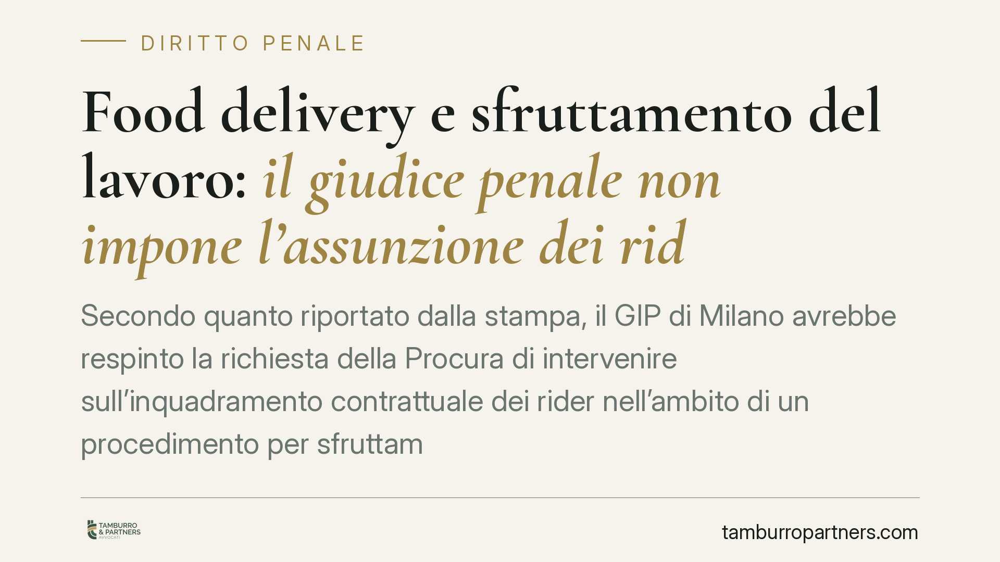

Food delivery e sfruttamento del lavoro: il giudice penale non impone l'assunzione dei rider
Secondo quanto riportato dalla stampa, il GIP di Milano avrebbe respinto la richiesta della Procura di intervenire sull'inquadramento contrattuale dei rider nell'ambito di un procedimento per sfruttamento del lavoro. La decisione riafferma una distinzione essenziale: il giudice penale tutela la retribuzione dignitosa, mentre la natura del rapporto spetta al giudice del lavoro.

Il caso
Nell'ambito di un procedimento per sfruttamento del lavoro che coinvolge una nota piattaforma di food delivery, la Procura di Milano avrebbe chiesto una misura incidente sull'organizzazione aziendale, con l'obiettivo di ricondurre i rider a un inquadramento subordinato. Secondo le notizie disponibili, il GIP avrebbe respinto tale richiesta, tracciando un confine netto tra il piano penale e quello della qualificazione del rapporto di lavoro.
Una precisazione tecnica è opportuna. Nel dibattito pubblico si è parlato di "controllo giudiziario", istituto che il Codice antimafia (art. 34-bis D.Lgs. 159/2011) riserva a finalità di prevenzione, tipicamente collegate a interdittive antimafia. Diverso è l'istituto dell'amministrazione giudiziaria dei beni e delle aziende (art. 34 D.Lgs. 159/2011), che consente al giudice di affiancare un amministratore alla gestione dell'impresa in presenza di determinati presupposti. La misura in concreto invocata va dunque verificata sugli atti, poiché i due strumenti hanno presupposti e funzioni distinti.
Inquadramento normativo
Il reato di intermediazione illecita e sfruttamento del lavoro è disciplinato dall'art. 603-bis c.p., introdotto e rafforzato dalla L. 199/2016 (cosiddetta legge sul caporalato). La norma punisce chi utilizza o impiega manodopera in condizioni di sfruttamento, approfittando dello stato di bisogno dei lavoratori. Tra gli indici di sfruttamento rileva la sistematica corresponsione di retribuzioni palesemente difformi dai contratti collettivi o comunque sproporzionate rispetto alla quantità e qualità del lavoro.
Il parametro di riferimento è l'art. 36 della Costituzione, che riconosce al lavoratore il diritto a una retribuzione proporzionata e sufficiente ad assicurare un'esistenza libera e dignitosa. Su questo terreno il giudice penale può intervenire: la paga dignitosa è un presidio costituzionale la cui violazione può assumere rilievo penale.
Altro è la qualificazione del rapporto. L'art. 2 del D.Lgs. 81/2015 estende la disciplina del lavoro subordinato ai rapporti di collaborazione le cui modalità di esecuzione sono organizzate dal committente, anche con riferimento a tempi e luogo di lavoro. Stabilire se un rider sia collaboratore o lavoratore subordinato è però questione riservata al giudice del lavoro, secondo le regole del riparto di giurisdizione.
Perché la distinzione conta
Il nodo è di sistema. Il giudice penale accerta se ricorrono gli elementi del reato, tra cui lo sfruttamento retributivo; non può però sostituirsi al giudice del lavoro nel riqualificare i contratti e imporre assunzioni. Ammettere il contrario significherebbe trasferire in sede penale una valutazione che l'ordinamento affida a un giudice diverso, con presupposti probatori e finalità proprie.
I due binari, tuttavia, si alimentano a vicenda. L'accertamento penale sullo sfruttamento può offrire elementi al giudizio civile sulla natura del rapporto; e la qualificazione operata in sede lavoristica può incidere sulla ricostruzione del fatto penale. Restano procedimenti autonomi, ma non impermeabili.
Sullo sfondo opera l'art. 41 della Costituzione, che tutela la libertà di iniziativa economica privata, ma la subordina al rispetto della dignità umana. La libertà organizzativa delle piattaforme trova qui un limite: l'efficienza del modello non può realizzarsi comprimendo i diritti retributivi minimi.
Implicazioni pratiche
Per gli operatori del food delivery la decisione, se confermata negli atti, non riduce l'esposizione al rischio penale. La soglia di attenzione resta la conformità della retribuzione effettiva ai parametri costituzionali e collettivi, a prescindere dalla forma contrattuale adottata. Un inquadramento formalmente autonomo non mette al riparo se la remunerazione reale scende sotto la soglia della dignità.
Per i rider, la pronuncia conferma che la strada per ottenere il riconoscimento della subordinazione passa dal giudice del lavoro, mentre il procedimento penale presidia un profilo diverso, quello dello sfruttamento.
Cosa considerare in concreto
- È opportuno che le piattaforme verifichino la coerenza tra il modello contrattuale dichiarato e le concrete modalità operative (obblighi di presenza, tempi, sistemi di rating).
- Rileva l'esigenza di misurare la retribuzione oraria effettivamente percepita rispetto ai minimi di riferimento, includendo i tempi di attesa e disponibilità.
- Assume valore la tracciabilità documentale dei criteri di calcolo dei compensi, utile in caso di contestazione.
- Per i lavoratori, è utile distinguere i profili azionabili in sede lavoristica (qualificazione del rapporto) da quelli rilevanti in sede penale (sfruttamento retributivo).
- In presenza di indici di sfruttamento, una verifica di conformità del modello di ingaggio può risultare utile per valutare i margini di adeguamento.
---
Contributo informativo a cura di Tamburro & Partners - Avv. Giuseppe Tamburro. Non costituisce parere legale.
Ogni condominio ha una storia a sé.
Se gestisci un'amministrazione e vuoi un confronto su una specifica questione condominiale, scrivi allo studio. Ti rispondiamo entro un giorno lavorativo.